项目简介
以季度数据查看能力升级为契机，围绕数据呈现、预算调整与角色视角，优化 Arena 资源面板的整体使用体验
🤔 Arena 资源面板是什么？
Arena 资源面板是 TikTok LIVE 内部的一个资源预算管理工具，主要服务于平台财务和区域财务两类用户，帮助他们进行资源预算的查看、分配和调整。
🧐 为什么优化升级？
原有面板需要新增季度维度的预算数据查看能力。同时，借助这次功能迭代的机会，能够系统性地优化现有资源面板的使用体验，进一步提升财务用户的预算管理效率。
TikTok UX ProjectB-End Design
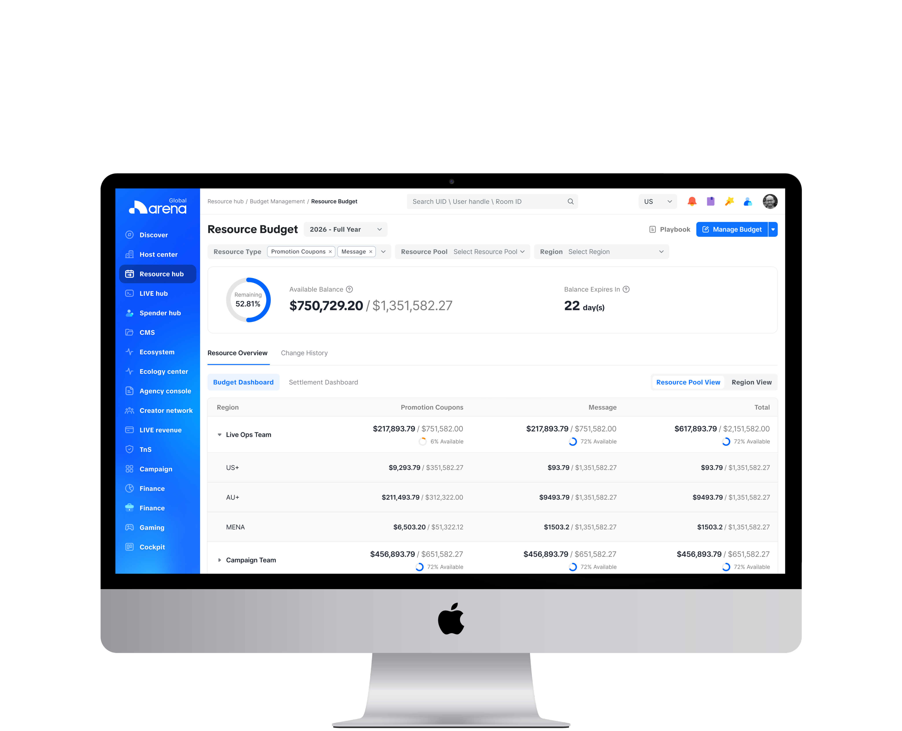
Arena 是面向 TikTok 内部平台财务与区域财务的资源及预算管理工具。本项目以新增季度数据查看能力为契机，围绕数据呈现、预算调整与角色差异，优化可视化表达、操作流程及多视角信息组织，帮助财务用户更高效地理解数据、调整预算与追溯变更
以季度数据查看能力升级为契机，围绕数据呈现、预算调整与角色视角，优化 Arena 资源面板的整体使用体验
Arena 资源面板是 TikTok LIVE 内部的一个资源预算管理工具，主要服务于平台财务和区域财务两类用户，帮助他们进行资源预算的查看、分配和调整。
原有面板需要新增季度维度的预算数据查看能力。同时，借助这次功能迭代的机会，能够系统性地优化现有资源面板的使用体验，进一步提升财务用户的预算管理效率。
在调研之前，设计内部先体验使用了该功能，并针对现有页面提出体验问题
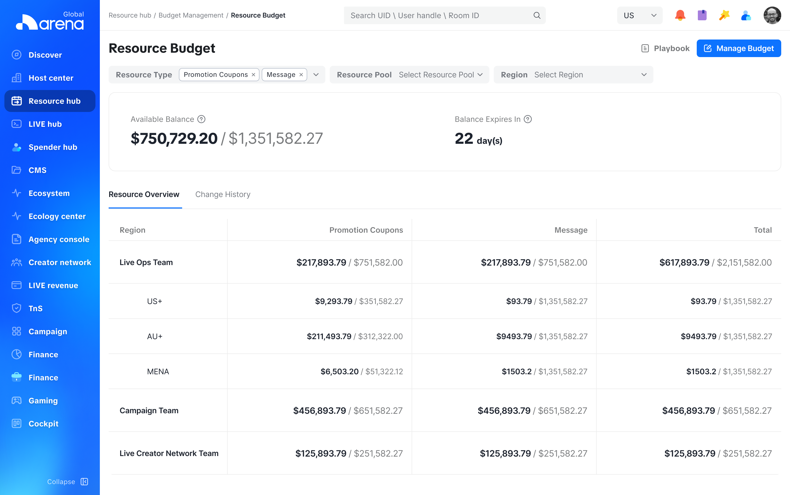
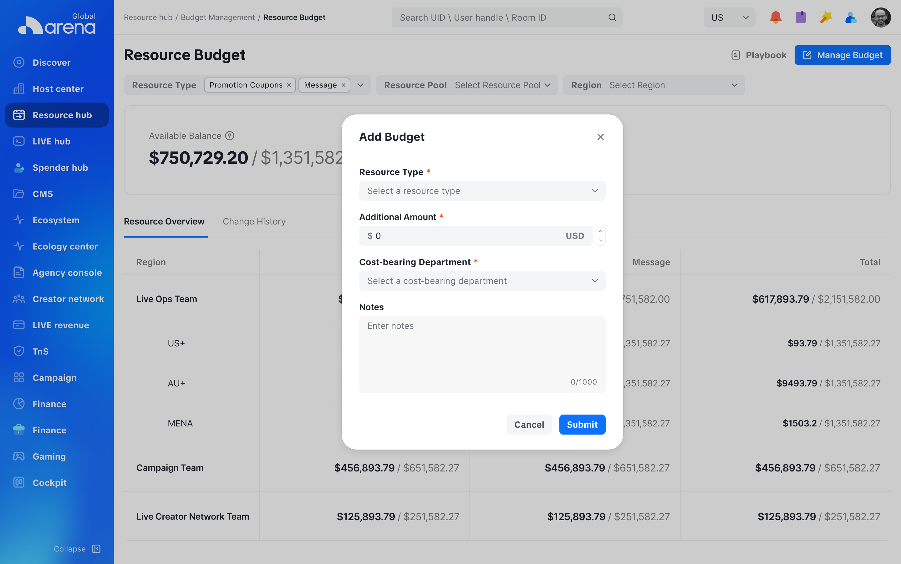
大额数字密集排列，缺少比例与状态提示，用户难以快速理解预算使用情况
调整入口与具体数据分离，差额需手动计算，增加了预算判断与调整的操作成本
不同角色的数据集中呈现，关注重点不突出，用户需自行筛选并定位所需信息
通过前期的体验走查，我们从设计视角发现了三个核心问题。为进一步验证这些问题在真实业务场景中的影响，以及是否存在尚未被满足的用户需求，我们邀请了财务同学进行访谈
访谈用户
我们还需要自己去来回找数据
数据太密集能优化下吗
我调整预算经常还需要算差值
我只想知道哪里需要我去增加预算
我和区域同学其实在意的维度不太一样
后面会支持快速审批等功能吗
访谈法
不只是数据不够直观，而是用户难以快速发现需要干预的预算
预算调整中，财务同学需要手动计算调整前后后的预算金额，来判断本次操作是否合理
不仅有追加预算的需求，也希望将富余预算调配至预算紧张的资源中，提高利用效率。
用户洞察：财务同学的核心诉求并非单纯的数据查看，而是快速发现预算问题、准确判断调整空间，并高效完成资源调配
在明确用户的核心痛点之后，我希望进一步了解，行业内相对成熟的数据管理类产品，是如何处理复杂数据的呈现、预算管理以及多维度的信息组织的。财务预算管理和商业数据分析两个方向，选取了 Pigment、阿里 Quick BI 和 Metabase 作为参考对象
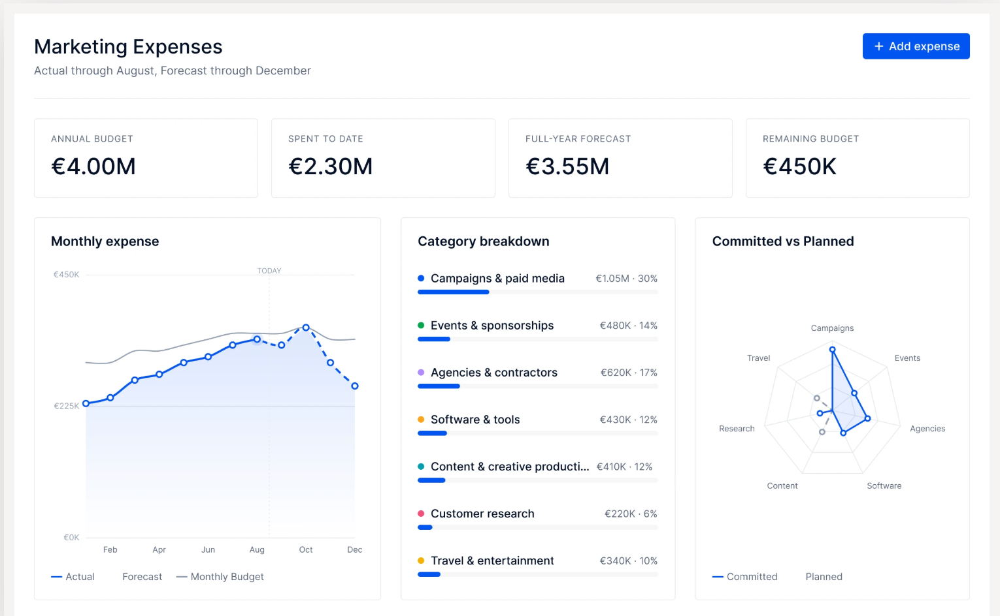
优势:核心预算指标集中展示，实际与预测数据对比清晰
局限:金额缩写和复杂图表不利于精确读取
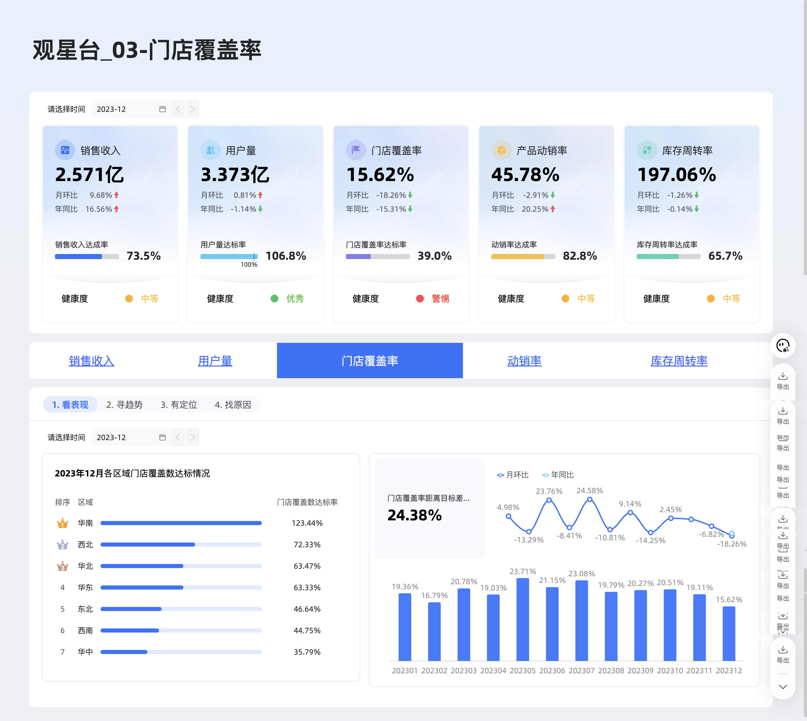
优势:分析维度丰富，结合排名、趋势与状态提示，帮助用户定位问题
局限:信息密度高、导航层级多，增加了阅读与操作负担
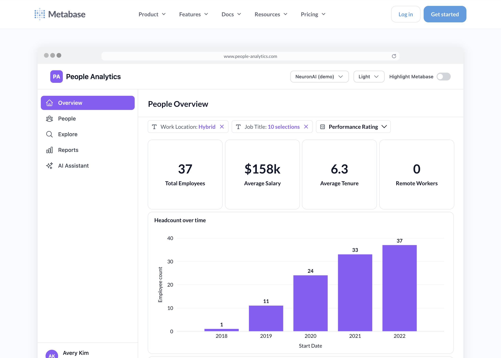
优势:页面层级清晰、筛选条件明确，便于浏览和查找数据
局限:指标缺少目标与差额参照，数据查看与后续行动的衔接较弱
竞品洞察：成熟的数据管理产品通常会通过清晰的信息层级、直观的数据对比以及灵活的数据组织方式，来降低用户的理解成本
结合旧版分析、用户访谈与竞品调研，从视觉、交互和信息三个层面优化体验，让数据更直观、调整更顺畅、角色关注更聚焦
让数据更易理解，强化视觉层级、图数结合、突出预算状态
让调整更加高效，缩短操作路径、自动关联信息、实时计算与反馈
让数据更加聚焦，围绕不同财务角色的关注维度重新组织信息
首先，在视觉层面，我希望帮助用户更加快速地识别预算状态，通过图形与数值结合，直观呈现预算余量和风险状态，降低数据理解成本
财务场景和普通的数据分析场景不同，用户对金额的精确性有很高的要求，所以不能为了视觉简洁而省略具体数值
Default
Warning
Danger
布局紧凑，关系明确
关系明确，不便嵌数
适合横向阅读
通过分组层级与数值主次优化，帮助用户快速定位目标数据，清晰比较预算差异
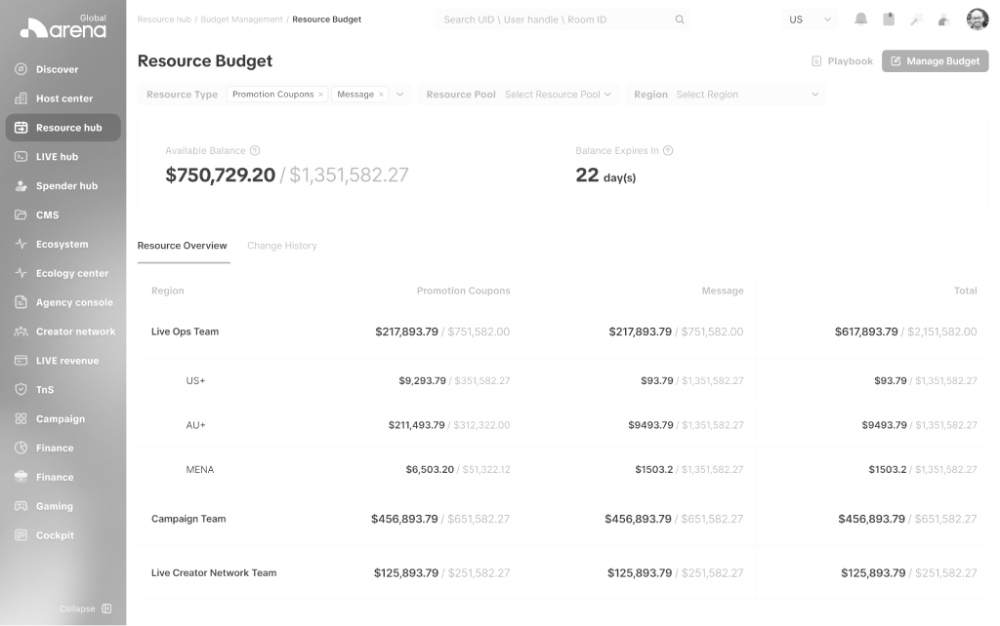
通过分组底色与展开收起，明确团队和区域的层级关系；区分金额主次，补充预算余量标识，帮助用户快速定位、比较和理解数据
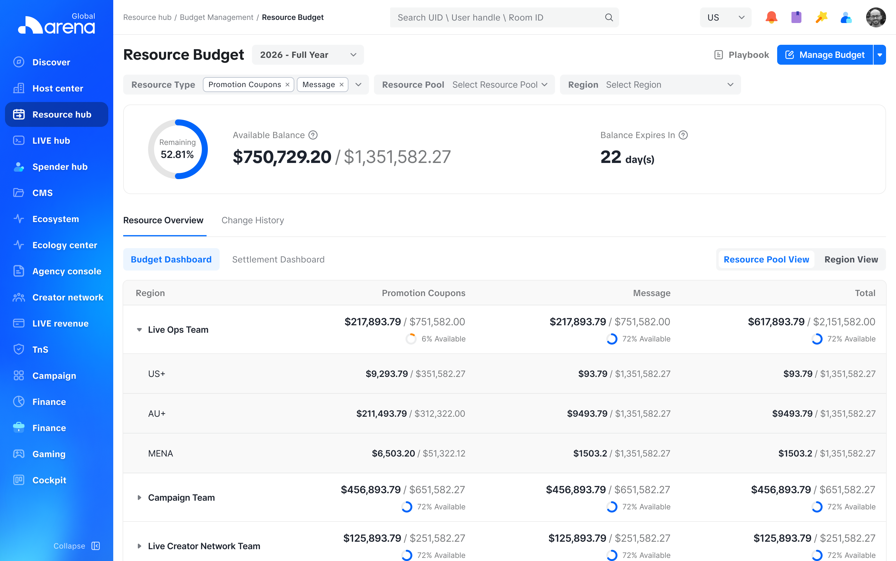
通过分组层级与数值主次优化，帮助用户快速定位目标数据，清晰比较预算差异
通过分组底色与展开收起，明确团队和区域的层级关系；区分金额主次，补充预算余量标识，帮助用户快速定位、比较和理解数据
关注优先级下，平台优先关注团队预算情况，再下钻体区域，因此将图形化表达优先应用在团队层级。其次是视觉信息密度。如果都采用，导致视觉元素过多，反而削弱核心数据的突出程度。所以我有意识地控制了图形的使用范围，让视觉资源服务于主要的用户任务
将调整入口与目标数据关联，自动带入相关信息，减少重复查找与填写，让预算调整更连贯
STEP 1 : 找数据
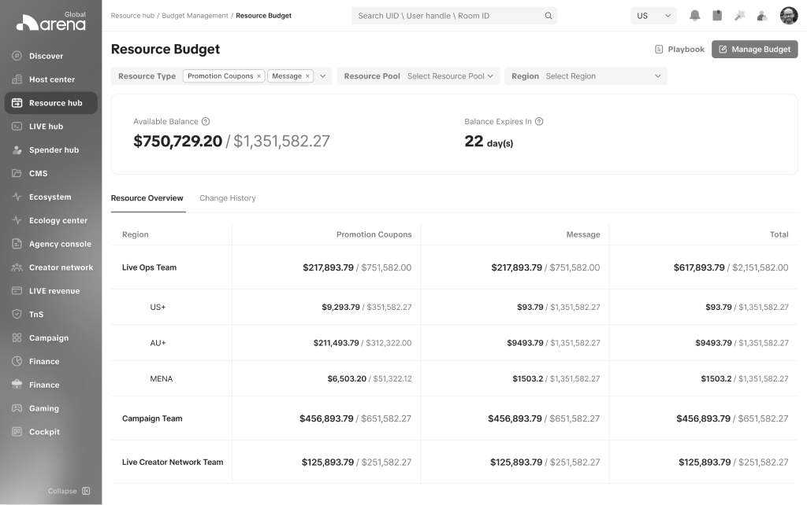
STEP 2 : 发起调整
STEP 3 : 手动填写表单
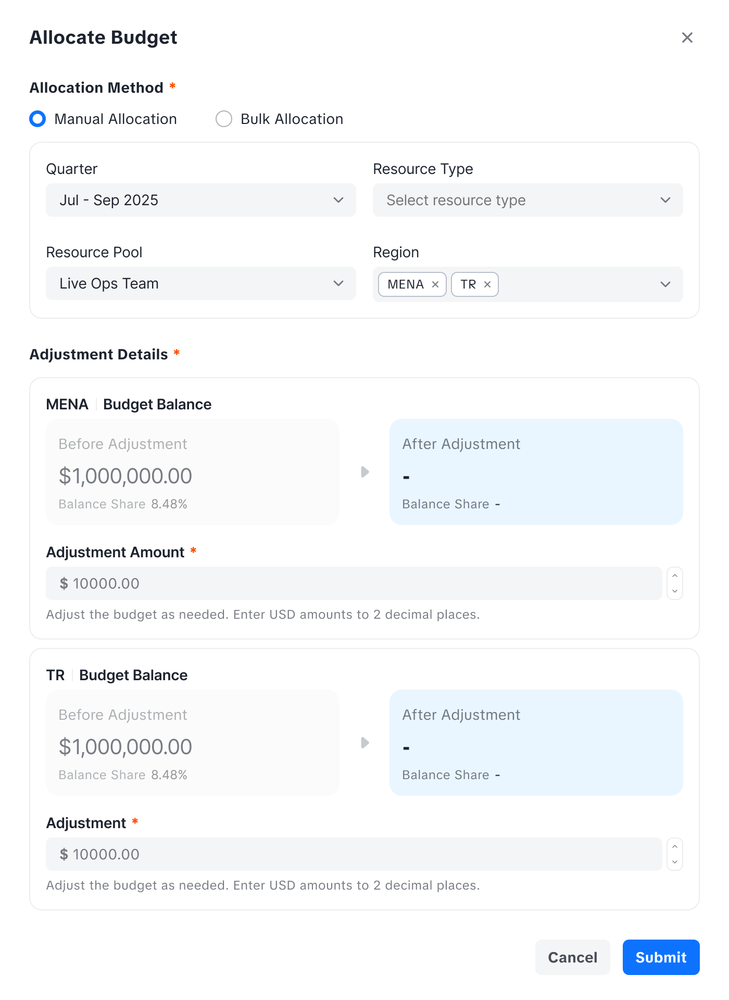
将预算调整入口放在对应数据行，用户发现问题后即可发起调整，并自动带入资源池、区域等信息，减少查找、记忆与重复填写，让查看数据到调整预算的衔接更顺畅
首先是操作入口与用户意图的匹配。其次是上下文信息的复用。
实时对比调整前后的预算变化，并提示余额不足风险，帮助用户在提交前确认调整结果
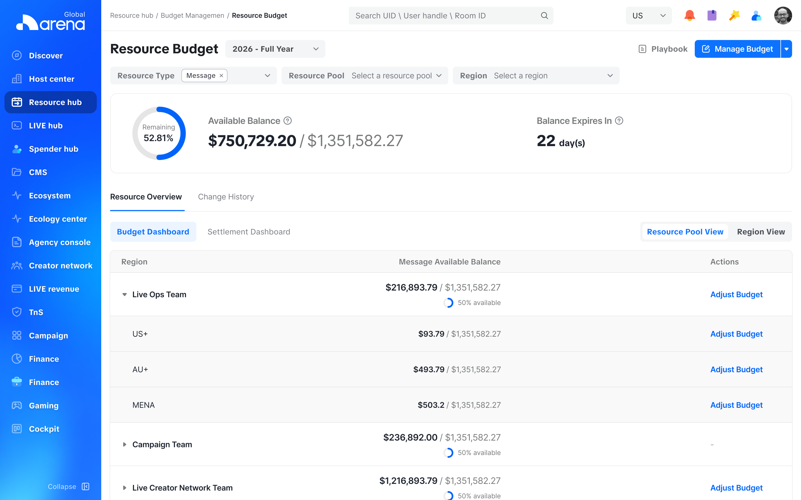
并列展示调整前后的余额与占比，输入金额后自动计算并更新结果；当余额不足时，通过颜色与文案明确提示，帮助用户在提交前识别问题，减少手动计算与反复核对
* 调整预算
Adjustment Amount *
Adjust the budget as needed. Enter USD amounts to 2 decimal places.
* 调整超预算
通过变更前后对比与状态标签，帮助用户快速核对预算变化，并以飞书图标明确审批跳转去向
Before
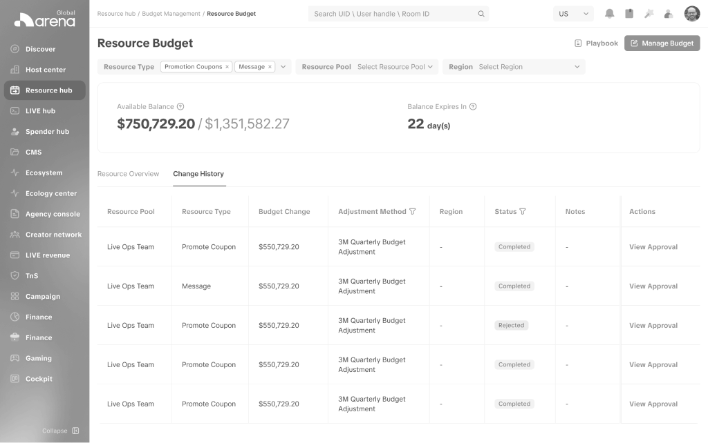
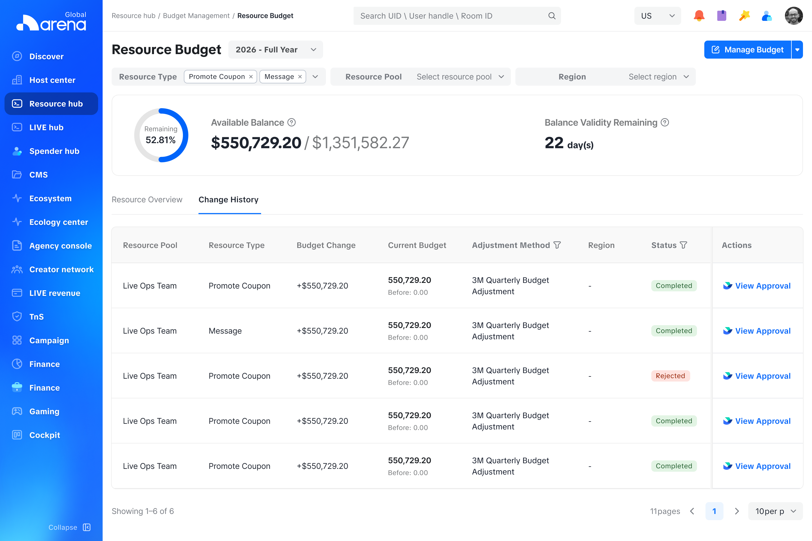
展示预算变动金额及调整前后数据，通过正负符号明确增减方向；结合状态标签与审批入口，帮助用户快速核对变更、识别处理结果并追溯关联审批。
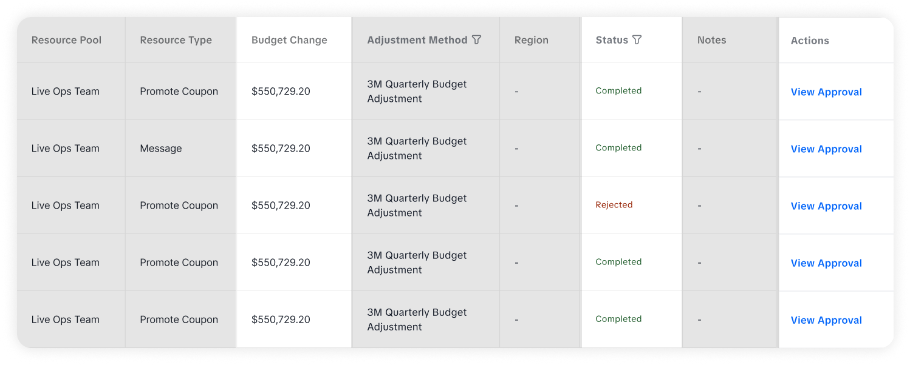
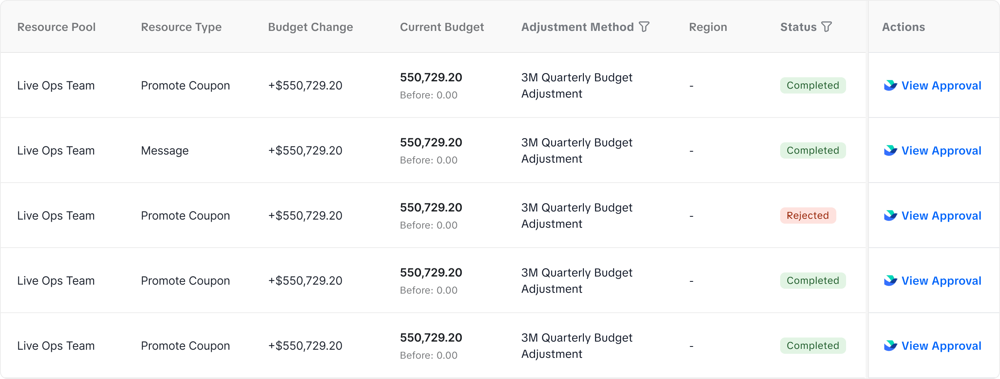
平台财务关注资源池的整体分配，区域财务聚焦本区域预算，围绕不同角色的关注重点组织信息
支持资源池与区域视图切换，按需重组数据层级，减少反复筛选，让不同角色快速获取所需信息
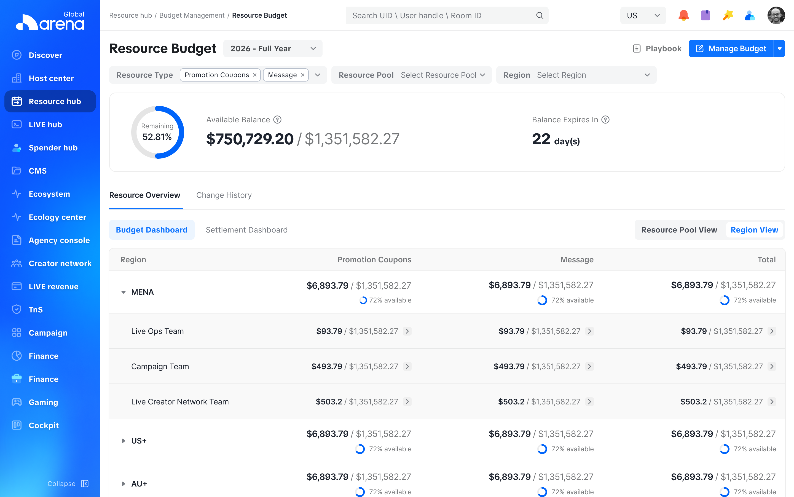
支持资源池与区域两种视图切换，围绕不同角色的关注重点重组数据层级，帮助平台财务掌握资源分配全貌，区域财务聚焦本区域预算，减少反复筛选与跨维度查找
模拟验证：以10位财务用户的新旧版任务对比为例，统计数据查找、预算判断及调整任务表现。查找平均耗时由55秒降至31秒，判断准确率由70%升至90%，调整平均耗时由140秒降至86秒。
* 耗时下降比例＝（旧版耗时－新版耗时）÷旧版耗时 旧版 55 秒、新版 31 秒，耗时下降约 43.6%
* 判断准确率提升20个百分点
* 调整耗时下降38.6%，旧版平均140秒，新版平均86秒